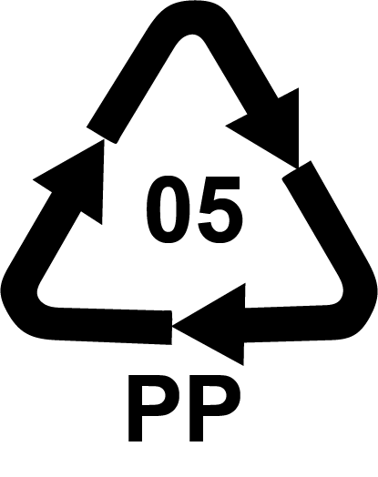

Wonder Wasteland
Hoe werkt het precies?
Je kunt je oude spullen inleveren en uiteindelijk worden er nieuwe producten gemaakt.Je kunt de volgende materialen inleveren:
Spijkerstof
Alle spijkerstoffen zijn welkom om in te leveren! Denk aan je oude jeans, denims, spijker tassen, spijker jassen etc.. die je eigenlijk weg wilt.

Kaarsvet
Heb je kaarsvet over? Gooi het dan niet weg! Maar lever het in bij Wonder Wasteland en die krijgt ook een nieuwe leven. nieuwe leven.
PP Plastic
Hierbij gaat het om plastic verpakking die gemaakt is van PP Polypropeen. Te herkennen aan het direhoekige recycle logo met het getal 5.
En dan?
Je levert je oude spullen in bij:
The Upcycle Store,Sint Annendwarsstraat 13, Amsterdam
En dan gaan ze aan de slag om iets nieuws van te maken! Ben je beniewd wat er uiteindelijk wordt gemaakt? Kijk dan op de galerij!